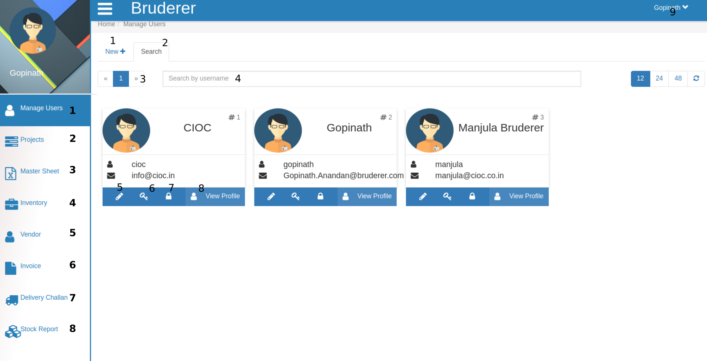
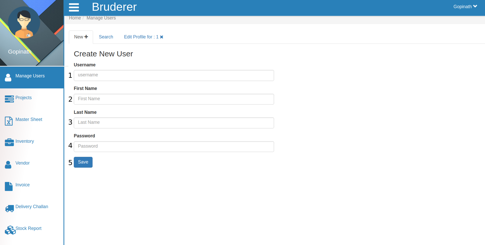
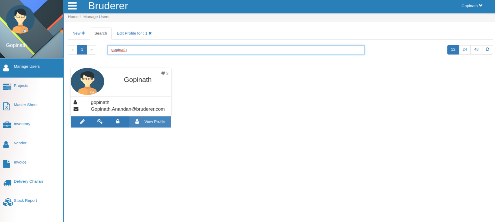
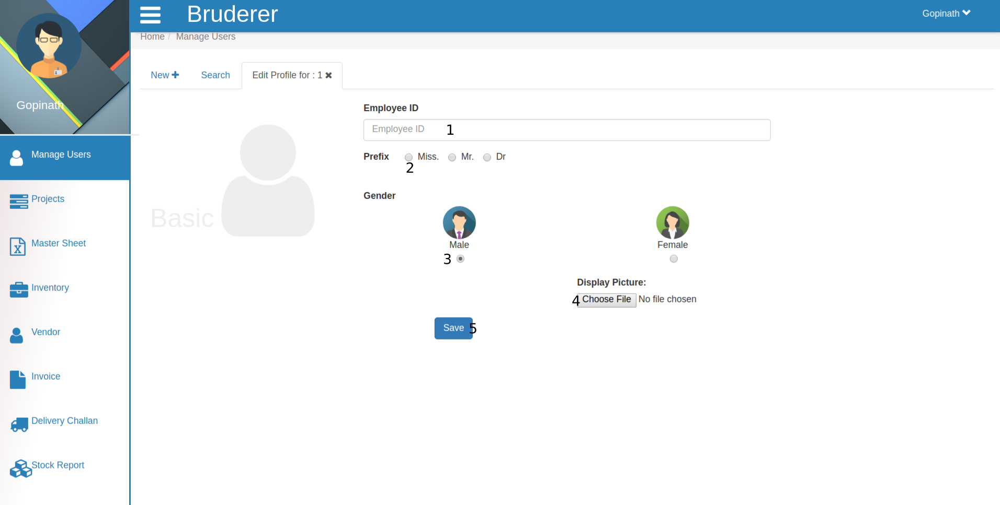
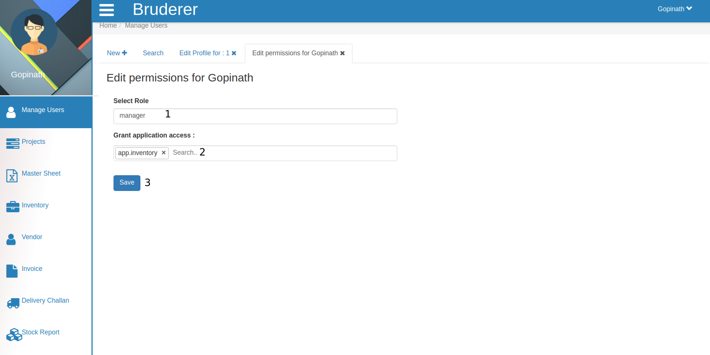
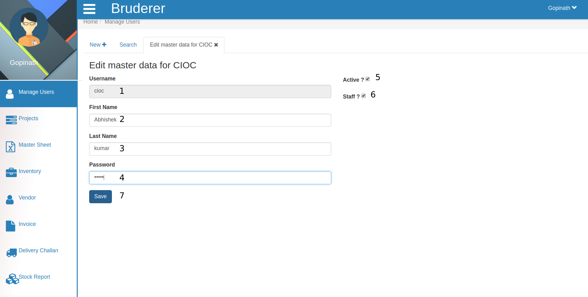

Manage Users¶

This is the portal to manage users, how? lets check it.
- Click here to create a new user.

Creating new user is very simple just follow the below steps.
- Fill the username in this text-area.
- Here you fill your first name.
- Here you fill your last name.
- Create your password (just fill in this text area) .
- Click on save button and a new user is created.
- To search user click here this is search tab. This is default page of Manage Users .
- These are buttons to change these pages by clicking on numbers or by clicking on next and previous button which is beside the number buttons.
- This is search field. you want to check user profile search them here by username .

In above image your search result will be appear.
- Click here it will open user profile where you can edit it.

Here you can edit user profile.
- Here you enter the user id (Employee id) .
- Here select the prefix .
- Here select the gender .
- Here Browse image file for display picture.
- Click on save button to save the profile.
- Click on this key button to Edit the permission for that user . As you click, you will see the below tab.

In the above tab
- Search and Select Role for that user. for e.g Manager
- Here search and select the Access area for user, You can give permission to as many field as you want.
- Then click on save button and that user will be able to access only those areas which is granted by Admin.
- Click on Lock button to edit the master data for that user .

Let’s see how ?
- Here you will see the username which is not editable.
- Here you can edit user’s First Name .
- Here you can edit user’s Last Name .
- Here you can edit user’s Password as well.
- Here click on this check box to Active that user. if this checkbox is checked means user is already active if not admin can make him as a active user.
- If that user is a staff member then this checkbox will be marked as checked or if you want to add them as you staff member then click on this and make this checked.
- Click on Save button and the edited data will be saved.
- Click on View Profile to check user’s details.